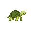

KDBP stands for Khujta Deep Behavioural Protocol. It is not a database and it is not a framework — it is a folder and a discipline. A project's plan, decisions, values, proof, and deferred work live in plain files under .kdbp/, and every agent session reads them at startup before doing anything else. The protocol part is what those files are for: they give an agent the context and the standing values it needs to align with the intent behind a prompt — what should happen in this codebase, and how it should behave while doing it — not just the literal words. Carrying that alignment in files instead of in the model's head is the whole idea.
01The one idea
An AI coding agent has no memory of its own between sessions. Close the chat, hit a context limit, or swap from one model to another, and whatever the agent "knew" about your project — the plan, the reasoning behind a tricky decision, the bug that's known-but-deferred — is gone unless it was written down somewhere the next session will actually look.
KDBP's answer is simple: put that memory in files, not in the model. The agent that shows up for today's session is a stateless visitor — it arrives empty-handed, reads .kdbp/ to find out what's going on, does some work, and writes its findings back before it leaves. The files hold the state. The agent is replaceable; the folder is not.
A session can crash mid-task. You can switch from one model to a cheaper or newer one halfway through a project. A different person on your team can pick up the work tomorrow. In every one of those cases, the next agent opens .kdbp/, reads what's there, and resumes — because the plan, the open questions, and the reasoning were never trapped inside a conversation that's now gone.
02The memory loop, visually
Every command in the suite (scoping, planning, executing, reviewing, committing) follows the same shape: read the relevant .kdbp/ files first, do the work, then write the outcome back. Nothing is held only "in mind" across that boundary.
flowchart TD
A["🤖 Agent session<br>(stateless visitor)"] -->|"reads at startup"| K
subgraph K["🗄️ .kdbp/ — the memory store"]
direction LR
P["PLAN.md<br>what + phase state"]
D["DECISIONS.md<br>why"]
N["PENDING.md<br>priced debt"]
L["LEDGER.md<br>history + proof"]
end
A -->|"does the work"| W["Session work<br>(code, review, commit)"]
W -->|"writes outcome back"| K
K -->|"next session reads fresh state"| A2["🤖 Next agent session<br>(same project, new visitor —<br>could be a different model)"]The diagram shows the four highest-churn files; the fuller inventory (SCOPE, the standing-law files, and the append-only walk record) is in the next section.
03What each file is for
Different kinds of memory change at different speeds, so KDBP splits them into separate files instead of one giant notebook. Some files change every phase; some change only when a real decision is made; some almost never change at all. The table below groups every file into one of three churn tiers.
Each phase moves through a row of status cells — Red · Exec · Review · Commit · Push (Red and a Center cell are optional columns a plan can carry). PLAN.md tracks per-phase state against those cells; see The development loop for how they route.
Change-every-phase
| File | Holds | Changes |
|---|---|---|
PLAN.md | The active goal and a phase table (what's being built, and its Exec/Review/Commit/Push state per phase). | Every phase |
PENDING.md | Priced technical debt — one canonical row per deferred finding (source, file, scale tier, priority, times-deferred, status) so deferred work doesn't vanish into vague TODOs. | On each deferral or resolution |
LEDGER.md | Append-only session history — what shipped, what was reviewed, gate results, with proof (command output, file:line, artifact path) attached to every claim. | Every session, append-only |
walks.jsonl | A human's walk record — who · when · result · evidence, one line per walk; the one verification input with no machine source (the /gabe-walk skill is archived; records append directly). | On each human walk, append-only |

Change-slowly| File | Holds | Changes |
|---|---|---|
DECISIONS.md | Ratified forks in the road — the option chosen, the rationale, the alternatives considered, and the trigger that would reopen the question. | On each real decision |
DEPLOYMENTS.md | Deploy events — what shipped to which environment, with the proof the live target was healthy afterward, written by /gabe-push. | On each deploy |
RULES.md | Project-local rules codified from the team's own retrospectives — cited by the alignment and decision-debt advisors. | On each new rule |
Standing law
| File | Holds | Changes |
|---|---|---|
SCOPE.md | The stable premise — who this is for, what it does, the hard constraints. High-inertia; edited only through an explicit scope-change process. | Rarely — only on a real pivot |
VALUES.md / STRUCTURE.md / BEHAVIOR.md | Standing constraints — project values, allowed file locations, behavior rules — that outrank the model's own defaults. | Rarely — standing law for the project |
The split isn't bureaucracy for its own sake — it's what lets an agent (or a human) find the right kind of memory fast. "What are we building right now?" is a PLAN.md question. "Why did we choose Postgres over SQLite here?" is a DECISIONS.md question. Separating them means a session doesn't have to re-read a novel of history just to find today's task.
04Why this beats keeping state in the model's head
The alternative — relying on a long chat history, or on the model "remembering" a project across sessions — has three problems that KDBP is built to avoid:
- It doesn't survive a restart. Context windows fill up, sessions get compacted or closed, and anything not written down is paraphrased from memory at best, invented at worst.
- It doesn't survive a model swap. If the state lives only in a conversation with one model, moving to a stronger or cheaper model means starting the project's judgment over from scratch. If the state lives in files, any model can read them and continue.
- It can't be audited. A decision buried in a chat transcript is hard to find and easy to silently contradict later. A decision in
DECISIONS.md, with its rationale and its review trigger written down, is something a future session — or a human — can check against before doing something that conflicts with it.
Files are slower to update than a thought, but they are the only kind of memory that outlives the session that had the thought. That trade is the whole bet KDBP makes.
Next: Beats & commands — how a session actually reads and writes these files.
This page references
Derived from the page's own text on every build — no link table is maintained, and a reference that stops resolving stops appearing.